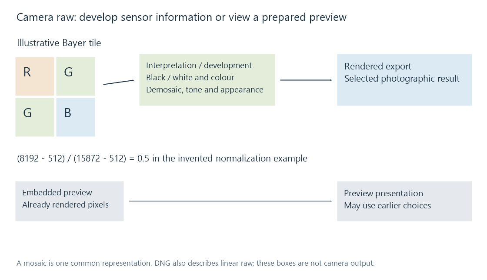

Camera raw images
A camera raw resource retains sensor-derived samples and interpretation metadata that a development process turns into a chosen viewable photograph.
A camera raw file retains sensor-derived image information for later interpretation. A rendered JPEG from the same capture is one chosen photographic result. The raw resource leaves more of that rendering decision to the development process.
It can also contain a ready-made preview. Showing that preview and developing the sensor data are different operations, even when a viewer labels both as opening the same file.
Sensor samples need an interpretation
A common colour-filter-array sensor measures one filtered colour component at each position. An illustrative Bayer tile is:
| Column 0 | Column 1 | |
|---|---|---|
| Row 0 | Red | Green |
| Row 1 | Green | Blue |
The development process estimates a full colour representation from the sampled arrangement. Those neighboring measurements are not four complete RGB pixels already waiting to be copied into a display image.

This is one common arrangement, not a definition of every camera. DNG also describes linear raw representations, including data that already has been demosaiced.
Black and white levels establish a working range
Take an invented fourteen-bit sample with black level 512, white level 15,872 and stored value 8192. A simple normalization gives:
(8192 − 512) / (15872 − 512) = 7680 / 15360 = 0.5.
The useful range is not automatically zero through the largest fourteen-bit integer. The interpretation data describes how that camera representation relates to the working image.
White balance can apply different component gains. A normalized component of 0.5 multiplied by gain 2 becomes 1 in this model. Further tone/colour decisions determine the rendered output. Clipping values early can discard distinctions that a later development would have used.
The arithmetic is a teaching example, not a complete camera calibration or a DNG decoder. Real development can additionally apply sensor corrections, active-area geometry and specified operations.
Development chooses an appearance
Exposure adjustments, white balance, demosaicing, noise treatment, colour conversion and tone rendering affect the output photograph. Two applications can use the same capture while choosing different processing or reading different edit instructions.
An embedded preview often represents a camera or earlier application's choices. A raw developer may instead use another recipe. A difference between them need not mean that one decoded a corrupted file.
The raw resource's Exif and other records provide capture/interpretation information. An XMP sidecar can hold applicable editing or descriptive data without replacing the sensor payload.
Raw, DNG and compression are separate labels
Camera-specific raw formats can have different structures. DNG supplies a documented format built on TIFF-related organization, with additional required interpretation fields.
Raw does not mean universally uncompressed. A particular format/setting can use reversible or lossy coding, and a DNG resource can contain different supported raw representations. The representation and coding choice determine what is retained.
Nor does raw automatically describe a finished HDR image. Sensor range must still be developed and encoded into a presentation with the intended brightness and colour interpretation.
Sensor storage and developed RGB have different sizes
For an invented 24-million-position mosaic with one fourteen-bit sample per position, ideal bit-packed storage is 24,000,000 × 14 / 8 = 42,000,000 bytes. A buffer using sixteen-bit storage for each sample is 48,000,000 bytes.
After development into three-component, sixteen-bit RGB, the same position count has an ideal payload of 144,000,000 bytes. This difference follows from component/storage representation; it is not a measurement of a camera file’s encoded size.
Compression, previews, metadata and working buffers add other relationships. A compact raw file can therefore require much more memory during development without representing a different capture resolution.
Keep the master and the viewing derivative distinct
A rendered derivative can be useful for a photo library that needs a directly presentable image. Generating it selects dimensions, orientation, colour space and appearance; it does not replace the raw resource's editing possibilities.
For an Emby source, identify whether the observed image is an embedded preview, a prepared export or an output from a raw-capable processing route. That distinction explains what was actually presented without assuming that every server/app combination develops every camera raw variant.